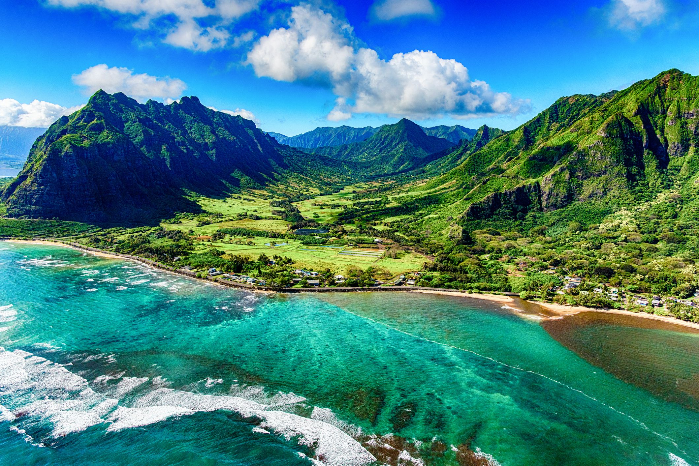

Appalachian Mountains, great highland system of North America, the eastern counterpart of the Rocky Mountains. Extending for almost 2,000 miles (3,200 km) from the Canadian province of Newfoundland and Labrador to central Alabama in the United States, the Appalachian Mountains form a natural barrier between the eastern Coastal Plain and the vast Interior Lowlands of North America. As a result, they have played a vital role in the settlement and development of the entire continent. They combine a heritage of natural beauty and a distinctive regional culture with contemporary problems of economic deprivation and environmental deterioration
Mount Everest is a peak in the Himalaya mountain range. It is located between Nepal and Tibet, an autonomous region of China. At 8,849 meters (29,032 feet), it is considered the tallest point on Earth. The mountain was named after George Everest, a former Surveyor General of India1. The summit was first reached by Edmund Hillary of New Zealand and Tenzing Norgay of Nepal in 1953

Polynesians (Marquesas Islanders) are believed to have first reached the island they named Hawaii by outrigger canoe around 400 CE. A second wave of settlement followed in the 9th or 10th century. The Big Island was the site of the first luakini heiau (a ceremonial structure used for worship and for human sacrifice). The origin of Hawaii islands, islets, and seamounts can be traced to at least 70 million years ago, with volcanic activity becoming dormant except for Mauna Loa, Kilauea, and the Lōihi Seamount.
